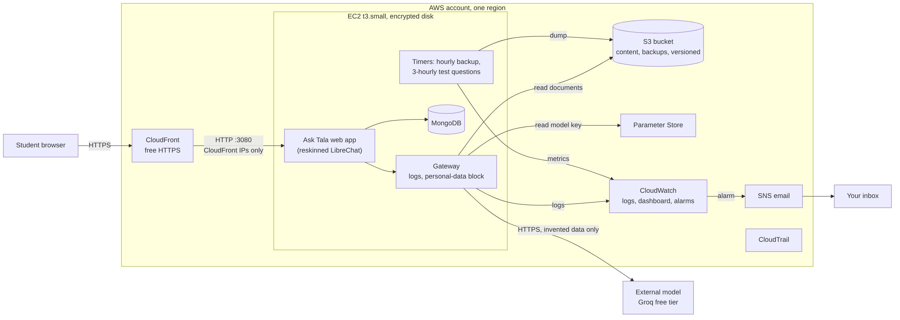

AWS infrastructure design
Everything runs in one AWS account and one region, using one server. That is a deliberate choice, since the brief asks for a small system that is run well.

How a question travels
- The browser sends the question over HTTPS to CloudFront.
- CloudFront forwards it to the server on port 3080. The firewall accepts traffic on that port only from CloudFront's address list.
- The Ask Tala web app (reskinned LibreChat) saves the message in MongoDB and passes it to my gateway.
- The gateway blocks the message if it contains an email address, Philippine mobile number or a long ID number. Otherwise it adds the college documents from S3 and reads the model key from Parameter Store.
- The gateway calls the external model,
openai/gpt-oss-120bon Groq's free tier. Only invented college content and the question leave AWS. - The answer streams back the same way, and the gateway writes one log line with the question, duration, status and version.
What each service is for
| Service | Setup | Purpose |
|---|---|---|
| CloudFront | d287m6a2imw4k1.cloudfront.net, HTTP redirected to HTTPS | Free HTTPS and the only public way in |
| EC2 | One t3.small, Amazon Linux 2023, IMDSv2 required | Runs the web app, gateway and database in Docker |
| EBS | 20 GB gp3, encrypted | Server disk, including the database |
| VPC | 10.20.0.0/24 with one public subnet; port 3080 limited to CloudFront | Network isolation |
| S3 | Versioning on, public access blocked; backups expire after 14 days | College documents, database backups, test results, releases |
| Parameter Store | 6 SecureString and 4 String parameters | Model key, application secrets and settings |
| CloudWatch | 4 log groups at 14 days, 9 alarms, 1 dashboard | Logs, metrics and alerts |
| SNS and Budgets | Email alerts; US$5 monthly budget | Tell a person when something is wrong or costing money |
| CloudTrail | Trail recording in this region | Audit record of who did what |
| Systems Manager | Session Manager and Run Command | Admin access with no SSH port open |
The database runs in a Docker container on the server, not in RDS, which keeps the cost and the number of moving parts down. The trade-off is that backups and recovery are my responsibility. Traffic between CloudFront and the server is plain HTTP inside AWS, which I list as a security gap.